Bonjour et bienvenue chez moi ! 🎉
J'espère que vous y passerez un séjour ressourçant et que vous profiterez pleinement de notre belle région. Cette maison is mon cocon — j'y ai mis beaucoup de soin et d'amour dans sa rénovation éco-responsable. Traitez-la bien et elle vous le rendra !
Je reste à votre entière disposition pour vous conseiller sur la région ou vous dépanner si besoin. N'hésitez pas à m'appeler !
06 64 51 32 45
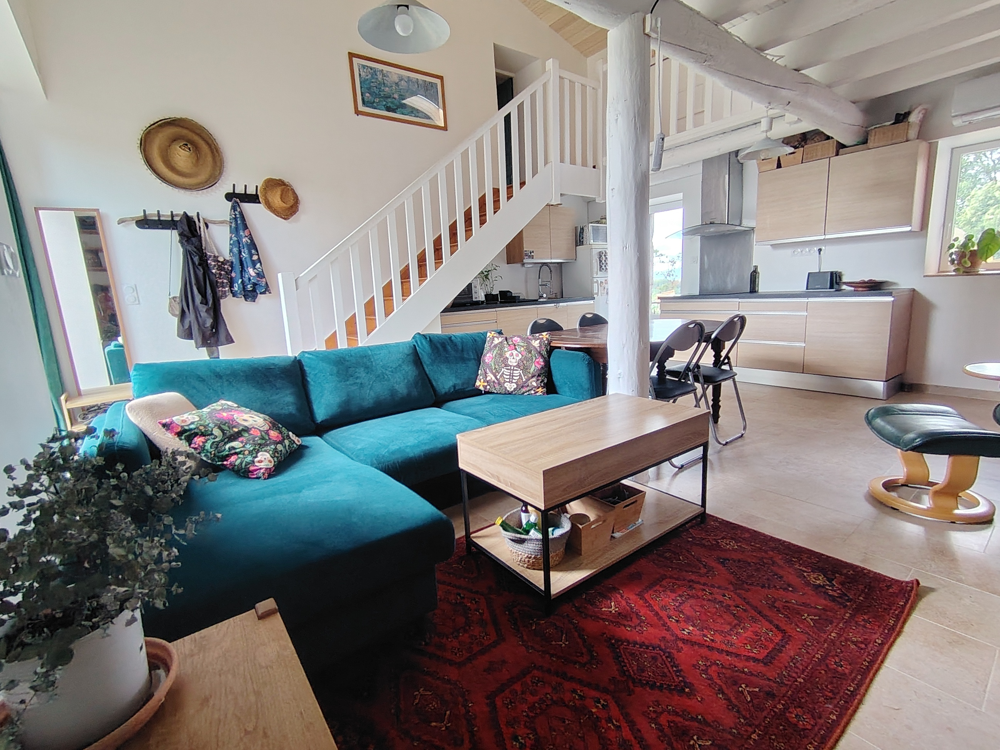
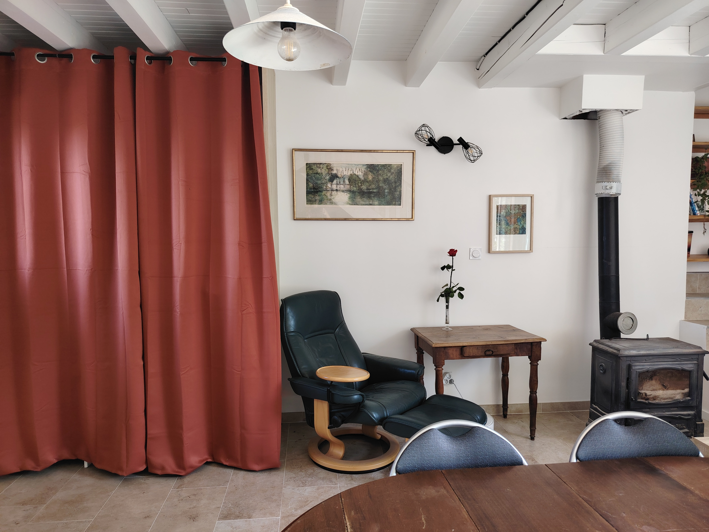
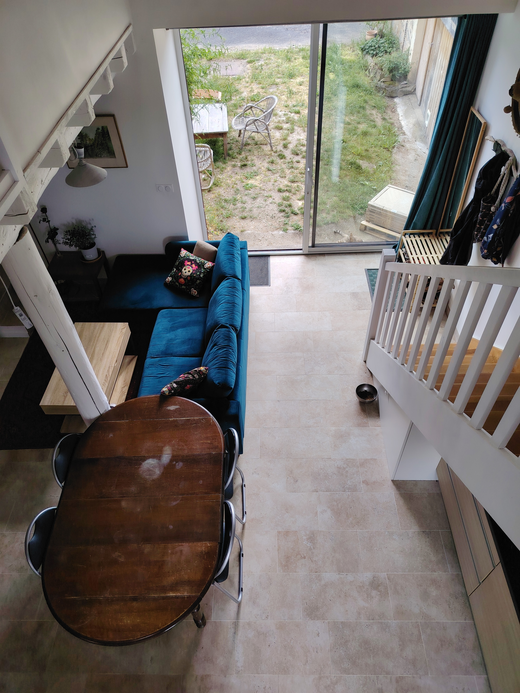
🤫 Respecter la tranquillité du hameau
Draps & taies
Serviette de bain (1 grande + 1 petite)
Pour votre confort et l'hygiène de tous, l'utilisation de draps et de taies est obligatoire. Si vous avez oublié les vôtres, contactez-moi vite pour activer l'option linge !
Mezzanine : 1 lit 90×190 cm · 1 couette 140×200 cm
Salon : 1 canapé-lit 140×200 cm · 1 couette 220×240 cm (merci d'utiliser l'alèse fournie)
5 oreillers 60×60 cm à répartir selon vos besoins.
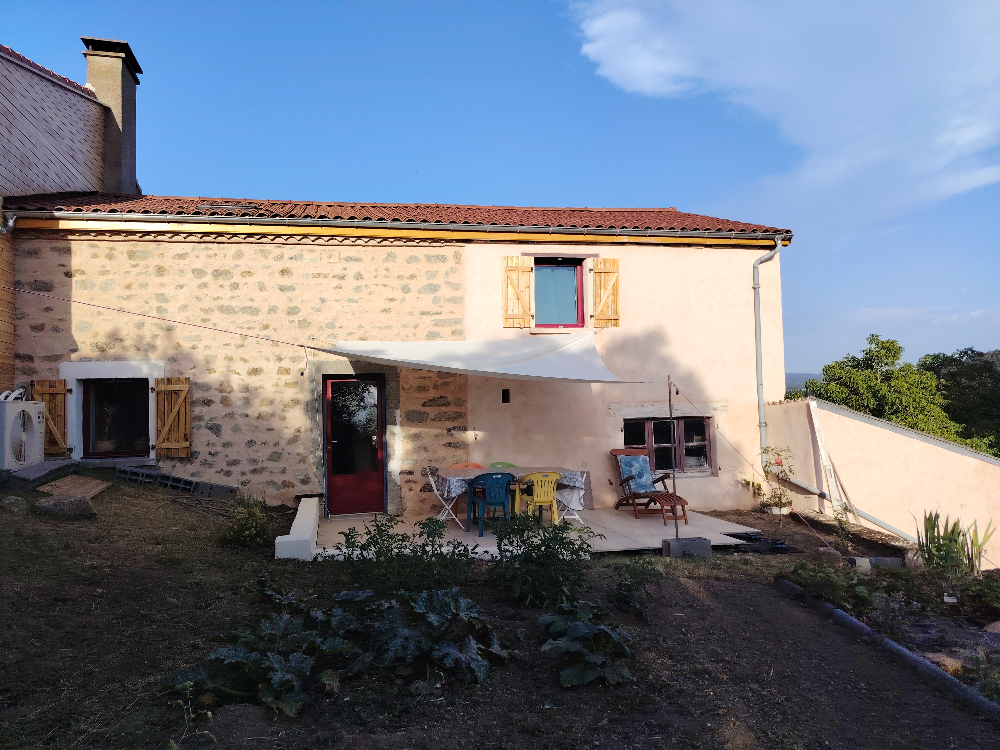
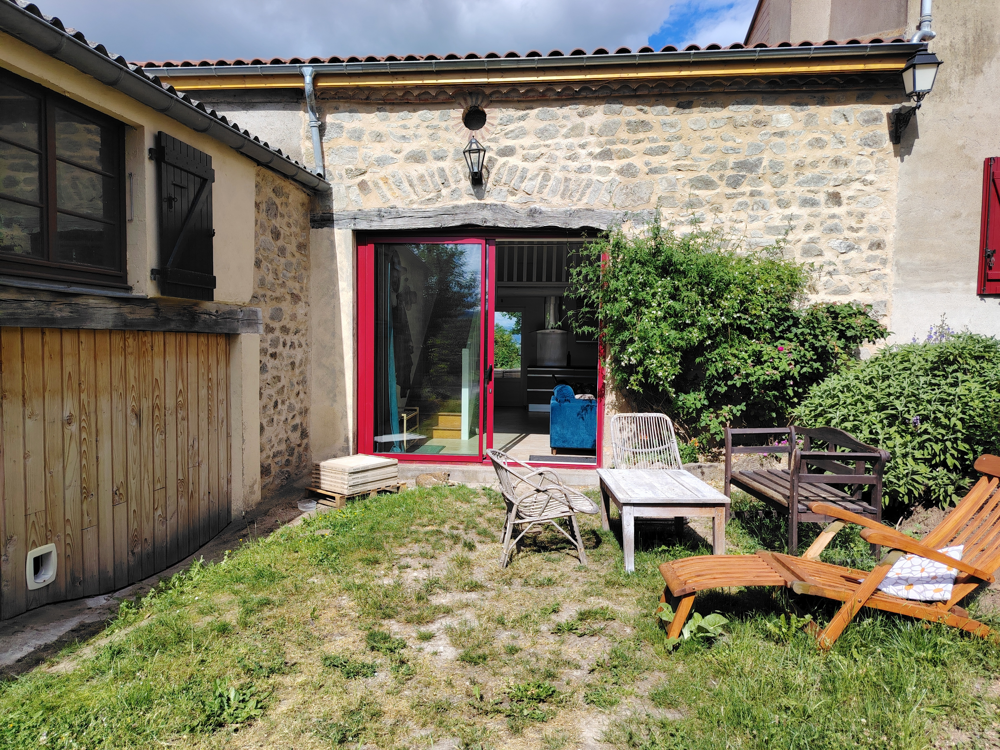
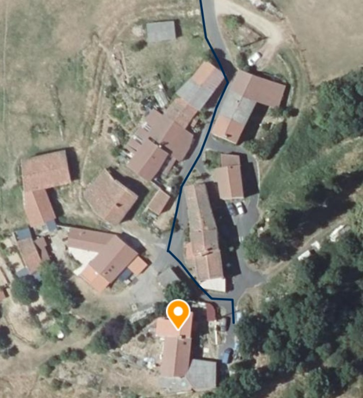
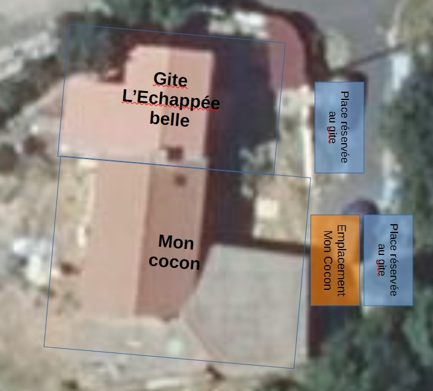
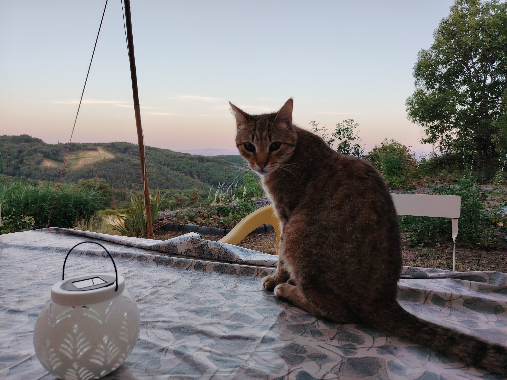
Le chat s'appelle Patate. Il est plutôt indépendant et peureux. Si vous réussissez à l'approcher, soyez délicats : il a une malformation douloureuse sur les côtes et réagit si on le touche à cet endroit. Il prévient généralement s'il est agacé, mais faites néanmoins attention avec les enfants.
Merci d'avance de lui laisser de l'eau et des croquettes à volonté. Les croquettes sont dans le placard blanc, sous le pied de l'escalier, juste à côté de sa gamelle. Vous pouvez remplir entièrement sa gamelle, il se gère et saura vous faire remarquer si celle-ci est vide 😉
Si depuis votre arrivée il vous snobe et que d'un coup il se frotte à vos jambes en vous regardant amoureusement… c'est le signal !
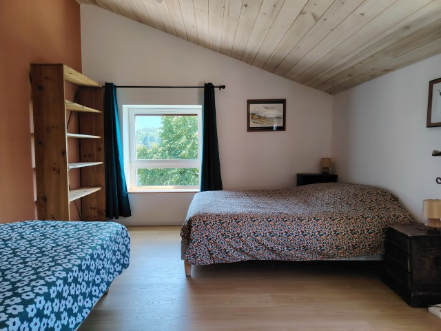
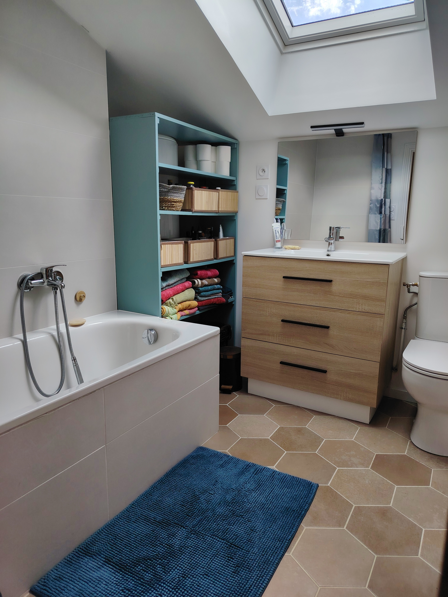
- 🧴 Le liquide vaisselle sort de la pompe intégrée à droite de l'évier — le flacon de recharge se trouve juste en dessous, au bout du tuyau.
- 🗺️ Des dépliants touristiques sur la région sont à votre disposition dans le salon.
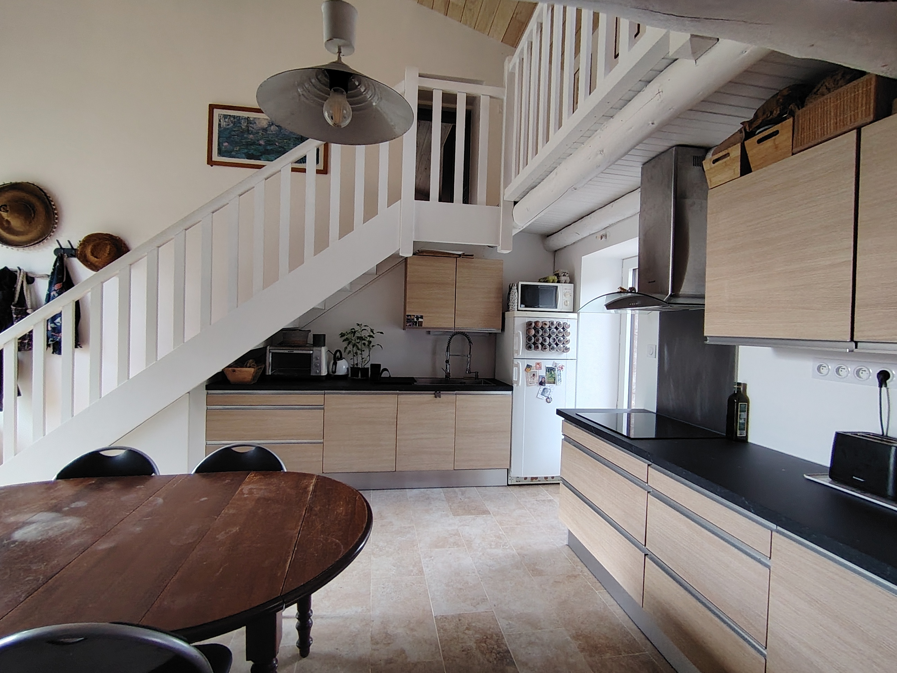
- 🪵 Poêle à bois et Pompe à Chaleur (PAC). Une télécommande contrôle la PAC du rez-de-chaussée. En hiver, le poêle suffit généralement à chauffer efficacement tout le RDC. Une autre unité de PAC est disponible dans la chambre à l'étage.
- 🪟 Fermez volets, rideaux et fenêtres la journée.
- 🌙 Aerez le soir et le matin pour faire rentrer le frais. En bas : faites circuler l'air entre la baie vitrée et la porte (bloc-porte disponible). En haut : ouvrez les fenêtres de la chambre et les velux de la mezzanine.
- 🌀 La clim a un mode FAN (ventilation seule, sans groupe extérieur), souvent suffisant.
- 🌡️ Si vous allumez la climatisation, le mode AUTO à 23°C est le réglage le plus efficient.
Si vous laissez les portes du rez-de-chaussée ouvertes la nuit pour ventiler, cachez impérativement toute la nourriture (y compris les croquettes de Patate). Les chats du voisinage ou les ratons-laveurs locaux pourraient venir se servir !
- 🫧 Lave-vaisselle : Appuyez sur ON, puis choisissez votre programme (j'utilise le P2). Pastilles dans le tiroir du haut, à gauche. Un peu bruyant — évitez la nuit. Heures creuses : 12h-19h
- 🍟 Friteuses & Cocotte-minute : Situées dans le placard aux rideaux oranges. Merci d'utiliser la friteuse à huile exclusivement à l'extérieur (une rallonge est prévue à cet effet).
- 🔥 Barbecue : Un petit barbecue est à votre disposition. Merci de ne pas l'allumer directement sur la terrasse (risque de taches) mais plutôt sur l'herbe à côté. Restez vigilants face aux risques d'incendie (le tuyau d'arrosage se branche directement sur la terrasse si besoin).
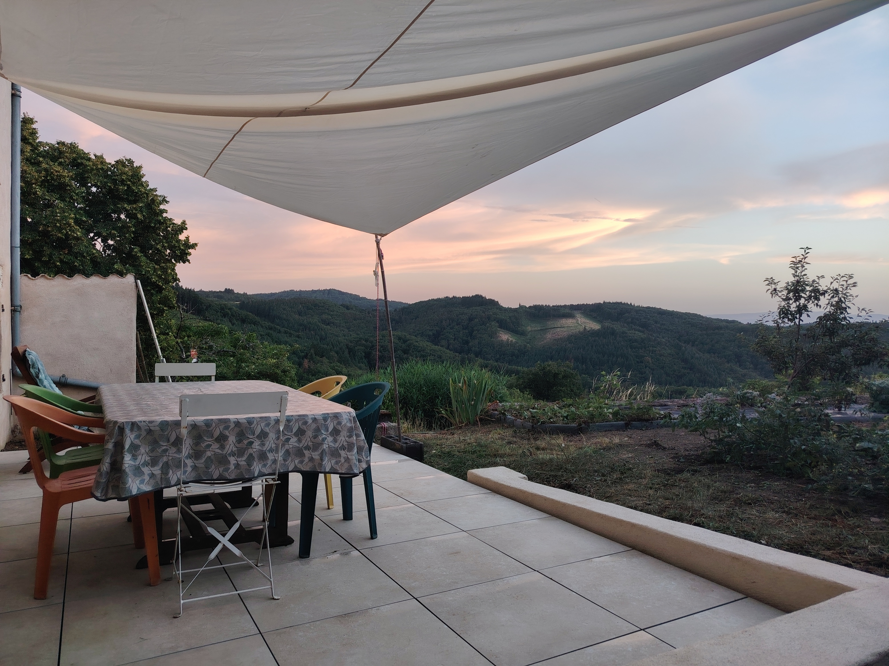
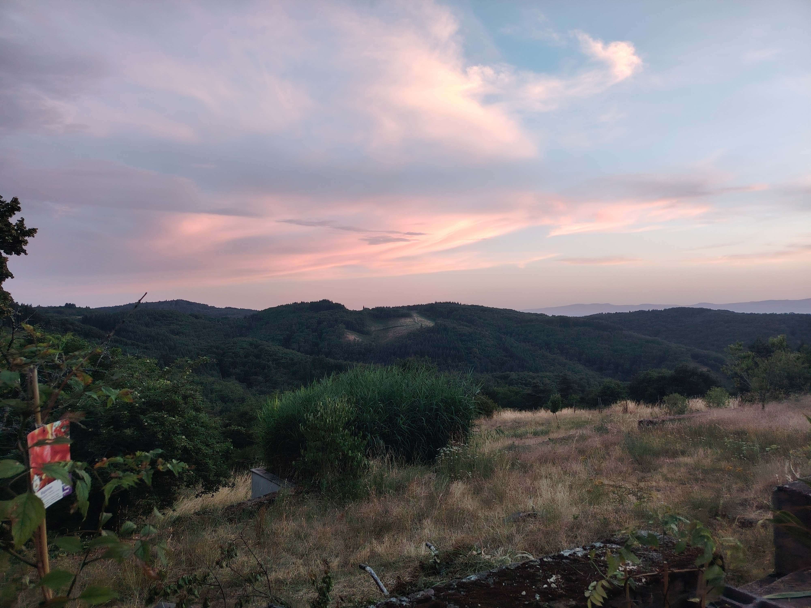
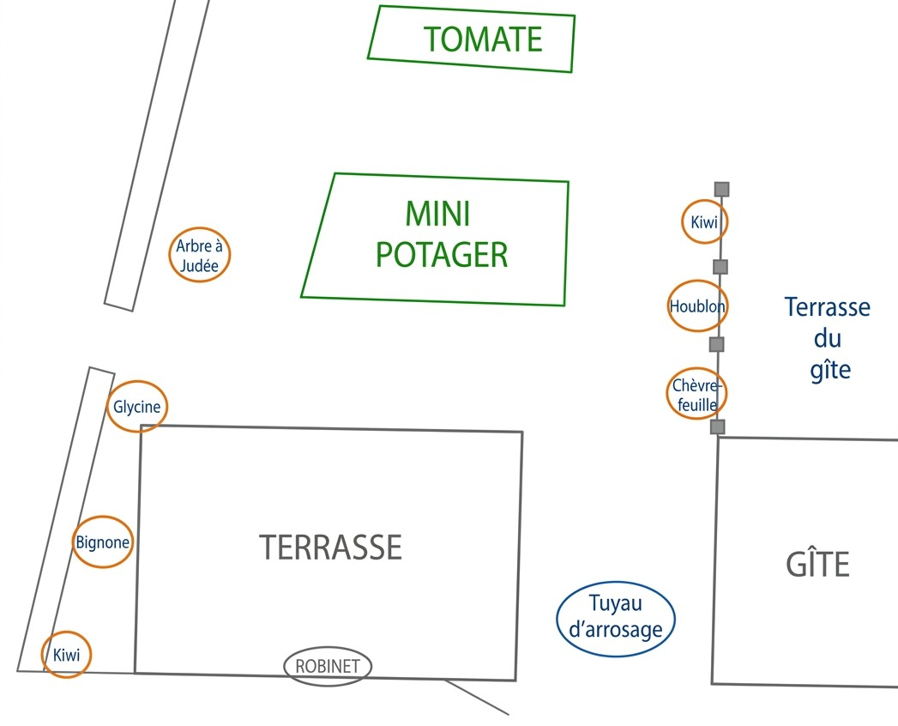
- 🪣 Une pour le tout-venant
- 📦 Une pour les conserves, papiers, cartons, emballages
- 🌿 Un composteur
Dans tous les cas, merci de :
- 🍽️ Laisser la vaisselle propre et rangée — vider le lave-vaisselle.
- 🗑️ Vider les poubelles (voir section éco-gestes pour le tri).
- 🛁 Rassembler le linge utilisé (torchons, tapis de douche, draps loués…) en tas dans l'entrée.
- 🪟 Fermer toutes les fenêtres, rideaux et volets.
- 💡 Éteindre les lumières et les appareils électriques.
- 🔑 Déposer les clés à l'endroit convenu ensemble.
Si vous effectuez le ménage vous-même, veillez également à :
- 🧹 Passer l'aspirateur et la serpillière dans toutes les pièces.
- 🚿 Nettoyer les sanitaires (WC, baignoire, lavabo).
- 🍳 Nettoyer la cuisine : plans de travail, plaques de cuisson, intérieur du frigo et du micro-ondes.
- 🛋️ Vérifier qu'aucune miette ou tache ne subsiste sur le canapé ou la literie.
Un petit mot sur le livre d'or ou un avis en ligne me ferait chaud au cœur ! Si vous avez des suggestions pour améliorer l'expérience, je suis toujours preneuse de vos retours. Merci pour votre confiance et bon séjour dans mon cocon ! 🌿
Les incontournables autour de Badarel
En cas d'urgence médicale grave, appelez le 15 (SAMU) ou le 112.